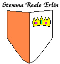

Il Reame Elfico Erlin rappresenta la più antica forma statuale di Arelia. Il Reame è una monarchia ereditaria strutturata in clan. Il Clan della Corona Reale è quello della famiglia Reale, si narra che è il clan i cui membri hanno la discendenza più vicino con i primi elfi scesi dall'Altopiano.